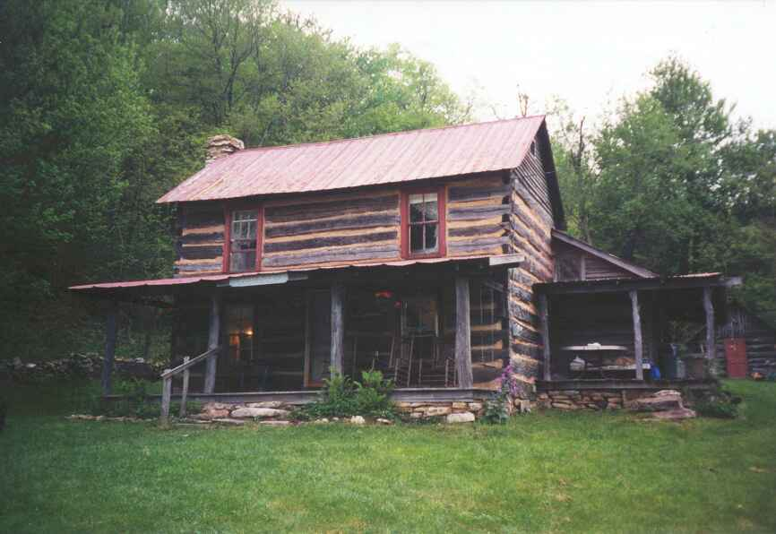
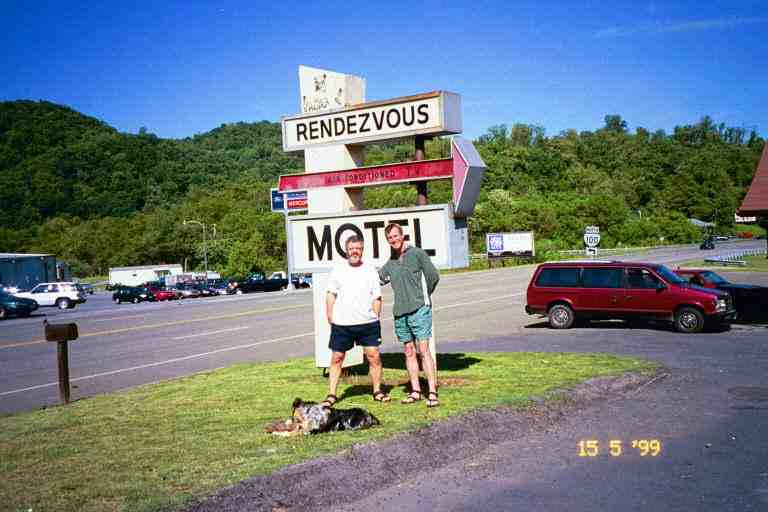

May 13. After saying goodbye to BAGEL and RAINDANCER, we left Trent's grocery and headed back to the trail. It was likely around 9 a.m., much later than our normal starts. The morning walk was fairly easy and level. The trail paralleled Dismal creek, crossing it a few times. Around noon we came to Wapiti shelter, a little off the trail, where we had lunch with ELF. There was a note in the register about the murder of a couple here about 15 years before. Apparently a mentally unstable man killed them and cut up their bodies with construction tools. They caught him because he was wearing the bloody boots he stole from them. He has now been released and is wearing a location device.
SNAIL arrived and told us that SMOKEY JOE had just gone by. After filtering water at the creek, we started a steep climb. We went up 1500 feet in a mile. We came upon SMOKEY JOE resting part way up the hill. He is a tall thin man in his late forties from Jacksonville, Georgia. He spoke with a very strong slow southern drawl. He later became a very important part of our hike, and a strong bond would form between him and us.
At the top of the hill, the trail levelled off, and we walked in open woods along the ridge line of Sugar Run mountain. Across the valley to our left, we could see dark clouds on the next mountain range. Lightning was flashing down from the clouds and we could hear thunder claps in the distance. This continued for some time and made us a little nervous. We came upon SNAIL taking a break at the edge of the trail and he assured us that the direction of the wind was such that the storm would stay on the other side of the valley.
We went down a little dip and came out into the open on the left side of the ridge line. The trail continued out in the open along a level strip about 20 feet wide. To our right were thick bushes and scrub sloping up to the top of the mountain not far above us, and to the left was a steep rocky lightly wooded slope. The trail was a narrow path in the middle of the strip, which was littered with rocks of many sizes. All of a sudden, all hell broke loose.
Without warning, the storm was upon us. In fact it was right on top of us. The lightning did not streak down, it simply lit up everything around us. The thunder was deafening and in stereo, crashing right over our heads at the same instant as the lightning flashed. It kept repeating and repeating, non stop. We continued on quickly, fully aware that we were exposed and with nowhere to go but forward. We could not get off the mountain. We were walking with as much fear of being surprised by the next loud bright assault to our senses as we were of the storm. We tried to avoid stepping on the many rocks imbedded in the trail and ran every time we came to a tree of any size.
The rain had started slowly but it was now pouring down. We did not like standing in one spot but we had to stop to put on our pack covers. We tried to do it quickly, maybe even too quickly but we were driven by fear because the thunder and lightning had not let up.
We hurried on but stopped a second time to put on our shells when the rain turned to hail and the wind picked up. We were out in the open and the hail was painful. We quickly got our shells out, all the while trying to keep everything dry, and then closed it all up and put the pack covers back on. I picked up MA's pack and held it for her to put on, but she was having problems getting her arms in the straps and I got impatient and shouted, partly out of frustration and fear and partly to be heard over the storm. She yelled back at me that she was doing her best, as she finally got the pack on. We grabbed each other and held on tightly, crying. We hurried on as the wind picked up, driving the hail at us, and the thunderstorm continued.
Finally the precipitation ended and the storm was blown away. We were wet and shaken and the wind was chilling us out here in the open. SMOKEY JOE came up behind us and said that he had been prepared to die during the storm.
The trail then went into the dark damp woods where we spent our time walking through wet grass and avoiding puddles. We crossed a country road and continued on. We had originally not made plans for our stop but now we decided that it would be best to go to Woodshole hostel which was down the next country road. SMOKEY JOE was going to the shelter, 2 miles past the road, where he was to meet SNAIL.
The trail came out of the woods at a spot where there was a fork in the Sugar Run road, in the middle of nowhere. A hand drawn map was attached to a tree at the edge of the woods. It did not show where we were standing, so were not quite sure which of the three roads to take. We did not want to make a mistake because the hostel was half a mile down one of the three dirt roads. Finally, we had it figured out. We took a tree lined country road which headed down from where we stood, curving slowly as it descended.
After some time, we saw a small field and a log building through the trees, and then came to a laneway. We looked in and saw a log building and what was formerly a barn at the back of the property set against the woods. We walked in and were greeted by an elderly gentleman who introduced himself as HIGHPOCKETS, the caretaker. He explained all about the hostel and said that Miss Tillie would be out to greet us later, as she liked to meet everyone. Attached is a picture of the main house where Miss Tillie lived. Picture was obtained from SINGLEMALT's website.

The hostel was in a converted barn with a covered veranda running across the front. The lower floor was divided in two by a wide open passageway running from the front to the back. To the left of the passage was a locked storage area. To the right, the passage opened up into a kitchen/eating area. Next to the opening at the back, was a ladder leading up to the sleeping loft on the second floor. Out back, just beyond the end of the passage, were steps leading to the outhouse, which to me seemed kind of close to the building.
In the kitchen we met COURT DOG, GRIM and a couple named TOEJAM and HAIRY STRAWBERRY. This was our only meeting with GRIM who we had heard a little about. I believe he had done part of the trail in past years. A very nice man. I had a conversation with him about the trail and having your priorities in life straight. The other two started in January but had to leave for few months when she broke her toe, hence, the name TOEJAM. Her partner had started with the name REDHEADED YETI because of his red hair and the massive afro style hairdo that he used to have. Miss Tillie called him Strawberry, so he became HAIRY STRAWBERRY. They were accompanied by their dog ZEUS. We were to find out later that TOEJAM thru hiked alone in 1992 (?) but stopped in Port Clinton PA, when someone was stalking her. She was now 30 years old and STRAWBERRY was only 24. They seemed to disclose their ages to see people's reaction.
We put some dry clothes on because there was little breeze coming down the passageway. We draped our wet stuff over the porch railing and on lines strung over the porch. There is a solar shower here that we could have used; however, with the weather today, it was not likely to be warm.
We were told that an ambulance had come that morning to get SUNSHINE EAST, a thru hiker in his sixties, who was found unconscious at the bottom of the ladder. Apparently he banged his head while climbing to the loft after a visit to the privy. We also found out that we were one day late for a hamburger BBQ. Two section hikers from Montreal had finished their hike and showed up here with a BBQ and hamburgers for all the hikers.
We bought some candy bars and pop that were in the fridge and we left the money in the box in the fridge. The hostel was free but the maximum stay was one night, unless Miss Tillie agreed and you were willing to do some chores. TOEJAM and STRAWBERRY had been here a couple of days because they had lost their wallet in town and were waiting for new credit cards. Breakfast was available in the morning for $3.50 in the main house. There was a sign-up list as there was a limit of 8 guests.
I first made some Ramen and then made supper. We sat relaxing at the table when ELF arrived cold, wet and tired. She was late because she had taken the first road and walked a long time before she realized it was the wrong one. She told of her experiences on the ridge in the thunderstorm. She had been afraid that her metal tipped hiking poles would get her electrocuted, so she would throw them ahead of her, pick them up and throw them ahead again. She had hiked through the storm in this manner.
Miss Tillie came out to see us with her housemate Juanita. They were older ladies, and I have heard that Miss Tillie is 84 years old. She comes up here from her home in Georgia to run the hostel from April to May. Her late husband Roy Wood had found and purchased this old homestead during the 1940's. They were both friends of the trail and there is a new shelter in Georgia that is named after them and is also called Woods Hole.
It was dark in the loft when we went up to sleep, as there was a single light bulb hanging from the ceiling. It is essentially an attic with mattresses placed side by side under the eaves on both sides. It would hold about 20 people. During the night, I was awakened by the sound of rain falling on the metal roof. I do not recall hearing that sound before, although I have heard tell of it. What a wonderful sound.
The next morning we all went to breakfast, except for STRAWBERRY and TOEJAM. I believe the two ladies had cooked everything before sitting down. We helped ourselves from platters and bowls in the middle of the table. HIGHPOCKETS did not eat with us; he served the coffee and replenished the bowls. Before starting the meal, Miss Tillie asked if someone would say grace. There was quite a long silence, before COURTDOG said he would be pleased to do it. I was very impressed with what he said. It came naturally, without hesitation, almost as if rehearsed. He thanked God for taking care of all of us, for the friendships and all the marvels of the trail and for providing these wonderful hosts, and asked Him to bless them.
During the meal, Miss Tillie directed the conversation, asking everyone about themselves. The most interesting disclosures came from ELF. A few years ago, she was dissatisfied were her situation and replied to an advertisement looking for a person to work in a stable on an estate owned by a rich family. She applied for the job and at the interview admitted that she knew nothing about horses. She managed to sell herself so well, however, that she got the job. ELF is a very intelligent and talented lady who could be doing many kinds of jobs, but she is doing what she wants to do. This is the kind of mentality we saw many times on the trail: money is not everything.
We left that morning headed for Pearisburg, saying goodbye to COURT DOG, who had obtained permission to stay an extra day. Most of the day we walked through the damp misty woods along the ridgeline. At one point we saw movement over on our right towards the edge of the cliff. My first impression was a rottweiller, but it turned out to be a black goat standing in the mist just below the edge. It was joined by a white goat and they both stood there looking at us. It turns out that a local person had owned goats and that they had escaped or been let loose and they now roamed the mountains. Feral goats were also seen in the mountains on the other side of Pearisburg. Those goats were less shy and would try to lick the skin right off the hikers and chew on anything salty, including the hiking pole straps.
In the afternoon we started a steep descent down to Pearisburg, dropping down 2000 feet in 2 miles. The descent was not easy. The earth was soft and wet, and there were many rock slides littering the slope. The vegetation was lush and the rocks and boulders were covered with dark green moss. The footing was therefore quite treacherous in spots. As we went down, it got warmer and we left the mist behind us. We soon heard the unmistakable sounds of civilization: traffic and barking dogs.
We registered at the Rendezvous Motel close to the trail on the western edge of town. We met TRAVELLER, a hiker from Germany who did the trail in 98 and was doing it again with a video camera. He was going very fast and would likely finish the entire trail in less than five months. He would be selling an edited version of his trip. He stuck ads in many registers that we saw thereafter, announcing his video and his website. We walked a mile up the road to buy groceries. We went to an Italian restaurant but they stuck us in a corner at a small table in an empty section of the restaurant. Feeling slighted, we left and had Chinese food. On the way back, we were picked up by the motel owner. ELF was staying here, and the owner let her use his van to go buy supper.
I called the Village Motel and Restaurant in Atkins to see if I had left my glasses there. The restaurant said that someone called RAINDANCER had picked them up a few days before. She had obviously stopped to pick them up on her way to Trail Days. Hopefully she would be able to get them to me.
We called BROOKS's parents. We had just missed LAUREL and BROOKS, who were being driven to Pennsylvania by BROOKS's father to continue their hike. They would be skipping a lot of the trail around here as it was their home territory and they had done a lot of it before. CANEBREAK had stayed with them a few days before. His mother, Karen Birchfield, would pick us up at the Dairy Queen up the road at noon the next day.
The next morning, I went to a grocery store nearby and bought some day old pastries for breakfast. Meanwhile, MA did the laundry. When she went to get the clothes in the dryer, the socks were rolled together. A real mystery which was cleared up when the housekeeper told us she had folded clothes in the wrong machine.
Karen picked us up and drove us to a few Dollar stores and to a mall where we got our first haircuts of the trip. We spent a wonderful evening at her place in Christianburg and went to a Methodist service the next morning, Sunday. After lunch, Karen returned us to the motel so we could get back on the trail that afternoon.
We met SINGLETRACK and CARIBBEAN QUEEN at the motel. She had developed a knee problem and had made it to Woodshole. Miss Tillie had driven her to the hospital and then here. SINGLETRACK had slacked here from Woodshole. We also met SNAIL again. See the compromising picture of PA and SNAIL. Just before we left, a pick-up truck arrived and SKY DOG ran up to me with my glasses. WOW!! Real trail magic.

One last word about Pearisburg. There is a hostel in town called the Holy Family Church Hostel run by the Catholic Church and located about 3 miles from the trail. EAGLE was through here a few weeks before us and stayed at the Hostel. He spent three days re-tiling the showers while he was there. More trail magic I guess.
****************
The next segment will have a lot more hiking than this one and we meet a real trail character: WYOMING SKATEBOARDER